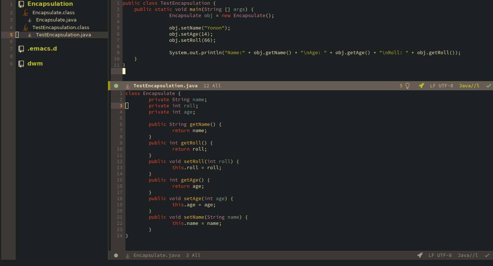
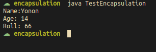

Oleh: Avrilian Briliansyah
Adalah sebuah teknik penyembunyian informasi dari luar objek. Kalau kita mempunyai informasi atribut di dalam objek yang tidak bisa diakses dari luar objek, lalu kita menambahkan getter dan setter sebagai sarana untuk menulis dan membaca informasi yang ada didalam objek, maka kita dapat menyembunyikan beberapa informasi dan mengontrol bagaimana pengaksesan data dilakukan.
Access modifier digunakan untuk menyesuaikan objek-objek mana saja yang bisa mengakses objek atau atribut-atributnya.
Misalkan kita ingin membuat atribut age pada objek dari class Cat hanya bisa diakses oleh method dari dalam objek itu sendiri, kita bisa menambahkan access modifier private:
class Cat {
private String name;
// ----
String getName() {
return name;
}
}
privateArtinya atribut dari class hanya dapat diakses oleh method dalam kelas itu sendiri.
protectedArtinya atribut dari class bisa diakses oleh method dari child class. Contoh:
class Animal {
protected void eat(){
// ----
}
}
class Cat extends Animal {
private String name;
// ----
void live() {
eat();
// ---
}
}
defaultInilah access modifier yang diberikan apabila anda tidak menulisnya secara eksplisit. Atribut dari class ini dapat diakes dari class lain yang satu package.
publicArtinya atribut dapat diakses dari kelas mana saja.
Berikut tabel:
| Modifier | Class | Package | Subclass | Other Classes |
|---|---|---|---|---|
| Private | Yes | No | No | No |
| Default | Yes | Yes | No | No |
| Protected | Yes | Yes | Yes | No |
| Public | Yes | Yes | Yes | Yes |
Constructor adalah method spesial yang dipanggil saat java menginisialisasi objek. Constructor juga dapat digunakan untuk memberi nilai awal pada atribut yang ada pada class.
class Cat {
String name;
public Cat(String arg) {
name = arg;
}
}
public Main {
public static void main(String [] args) {
Cat obj = new Cat("Veronika");
System.out.println(obj.name);
}
}
Output:
Veronika
Berikut kode:

Hasil dari kode diatas:
